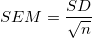

Letztes Update: 10.01.2021
In der Berechnung der Regression ist der SE (Standardfehler) des angepassten Parameters gleich der StAbw (Standardabweichung). Weitere Einzelheiten finden Sie in dieser FAQ. Der SEM (Mittelwert des Standardfehlers) wird jedoch nicht in der Regression verwendet. Er wird hauptsächlich in der Statistik verwendet, wo er eine Datengruppe vergleicht.
In der Statistik stellt StAbw die Verteilung einer Gruppe von Daten dar, während SEM "die Standardabweichung des Mittelwerts" ist, berechnet mit folgender Gleichung.

Er bietet Informationen, mit denen Sie bestimmen können, wie gut der Mittelwert ist, wenn Sie die Messung vielmals wiederholen. Allgemein gesagt sind die StAbw und der SEM sehr unterschiedlich.
Schlüsselwörter:SE, StAbw, SEM, Parameter, nichtlineare Kurvenanpassung, Standardfehler des Mittelwerts, Standardabweichung